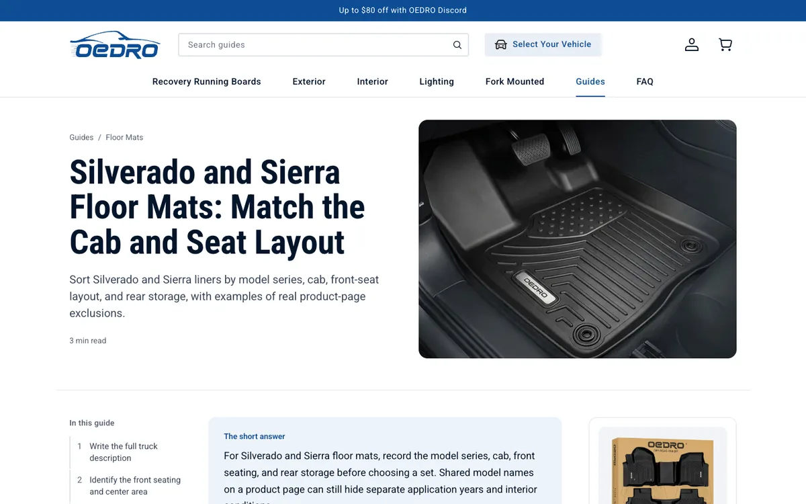
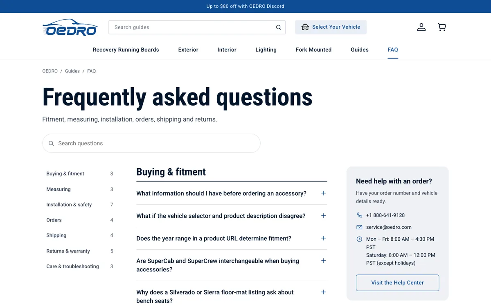
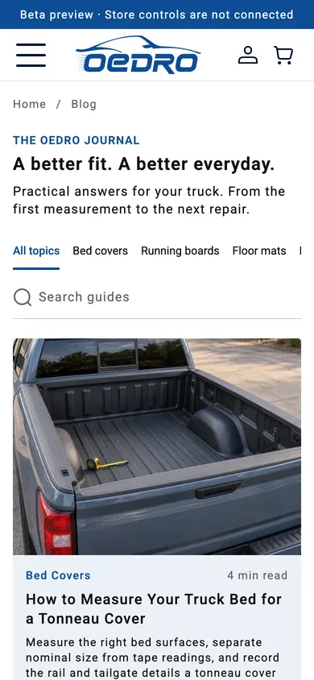
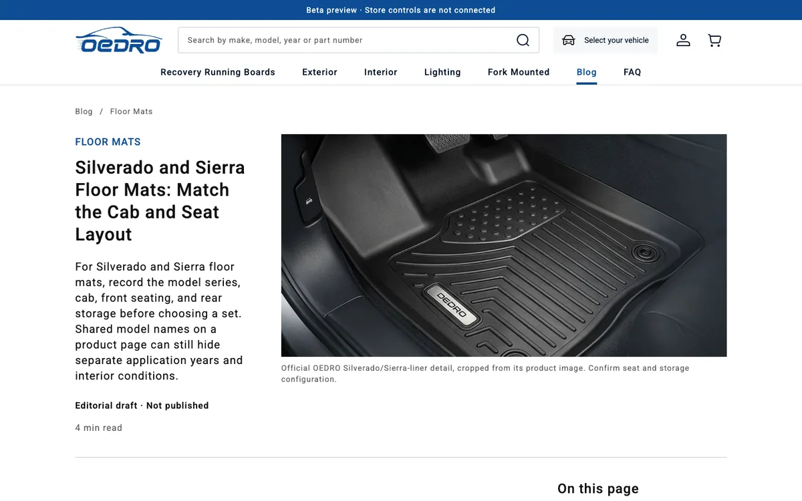
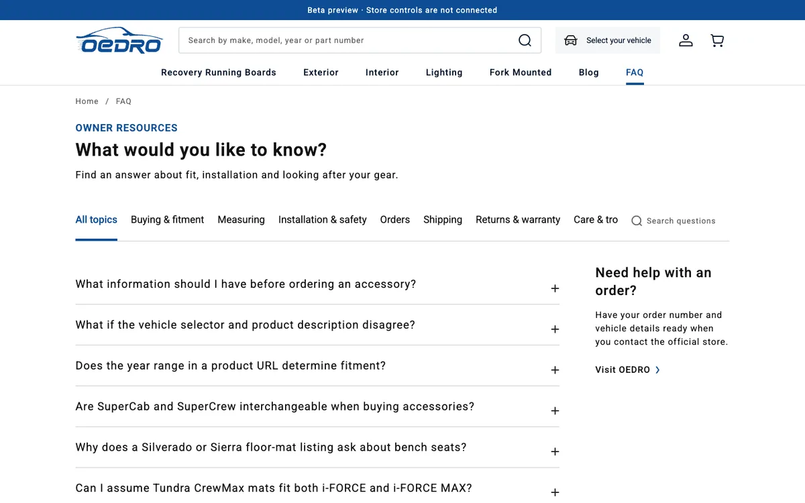

OEDRO 官网 Blog / GuidesOfficial Site Guides
开发完成，待部署上线
页面与功能
- 官网同款页头页脚公告条、logo、搜索、选车、账号、购物车和五个商品分类，页脚的包邮、退货、适配、质保和客服信息，全部链接到 oedro.com 对应页面。
- Blog 首页主推文章、按车型进入、按话题筛选和全文搜索，另有常见问题速查和 Discord 优惠入口。
- 12 篇指南文章开头一段简答，带编号目录；文中和文末是官网商品卡，用商城实拍图和商品名直达商品页；来源折叠，文末推荐相关文章。
- 34 条常见问题按七类分组，可搜索，左侧分类跳转，右侧是客服电话、邮箱和工作时间。
- 搜索和分享每页有搜索标题和描述、1200×630 分享图、文章和常见问题结构化数据、站点地图和 404 页；Blog 首页从约 11 MB 降到不到 1 MB。





解决的问题Problem
车主买配件前要查尺寸、适配和安装方法；官网缺一个和商城同一套外观、能被搜索到、读完能直接去买的指南和问答栏目。
它能做什么What it does
一套不依赖后台的静态网页。文章、问答、商城链接和商品卡写在几份内容文件里，改完重新生成即可更新整个栏目。
现在的用法In use
开发完成，待部署上线。这里放的是新版和改版前两套完整副本，可切换对比。
- 开发
- 2026-10-12 – 11-25首版到改版
- 页面
- 16 个网页Blog、12 篇文章、FAQ、首页和 404
- 内容
- 12 篇指南 · 34 条问答英文，面向美国车主